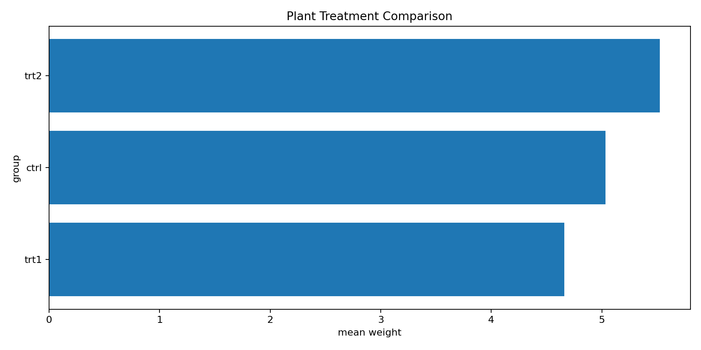

How does dry plant weight differ across treatment groups?
The largest observed mean weight is 5.526 for trt2. This ranking is descriptive, not a recommendation.

| segment | rows_used | metric | minimum | maximum |
|---|---|---|---|---|
| ctrl | 10 | 5.032 | 4.17 | 6.11 |
| trt1 | 10 | 4.661 | 3.59 | 6.03 |
| trt2 | 10 | 5.526 | 4.92 | 6.31 |
Only ten observations per group; sample mean rankings can be unstable.
Repeat the experiment with a preregistered design.